生产计划 PP（Production Planning）
生产计划 · BOM · 工作中心 · 工艺路线 · 成本估算 · 生产订单
1. 本模块导读
PP 主线是「主数据 → 计划 → 执行 → 成本」：生产计划参数文件、生产调度员、生产订单参数（排程 / 订单类型 / 确认）→ 物料清单 BOM（CS01，用处清单 CS15）→ 工作中心（负责人、控制码、能力 CR11、工时类别工作中心 CR01）→ 工艺路线（CA01）与工序拆分（CA02）→ 产成品生产计划视图 → 成本核算基础（成本构成结构、估计变式、日期控制、数量结构控制、成本核算变式 PC01）→ 产品成本估算（CK11N）→ 标记价格 / 发布价格（CK24）→ 实际成本核算估价变式与在制品结果分析版本 → 可用性检查（检查组、检查范围、检查规则 PP01/PP02）→ 计划策略组（MM02）与独立需求（MD61）→ MRP 运行（MD02）、MRP 清单 MD05、库存需求清单 MD04 → 计划订单转生产订单 → 采购申请转采购订单 → 收货与发票 → 生产订单下达（CO02）/ 发货 / 工单确认（CO11N）/ 收货（MIGO）→ 成本显示（CO03）/ 技术性完成 / 差异结算（KO88）/ 成本报表 → 库存清单与移库。
教材场景是一台「铸钢泵 170-230」从 BOM、工艺路线、标准成本估算，一路做到生产订单完工、结算和成本分析。
- 三大主数据：BOM（
CS01）、工作中心（CR01/CR11）、工艺路线（CA01） - 标准成本估算与价格更新：
CK11N估算 →CK24标记 → 发布 - 计划策略组与独立需求（
MD61）→ MRP（MD02）→ 计划订单转生产订单 - 生产订单执行链：下达
CO02→ 发货 → 确认CO11N→ 收货MIGO→ 结算KO88
文档中出现的 T-code：CS01 CS15 CR11 CR01 KP26 CA01 CA02 PC01 CK11N CK24 MM03 PP01 PP02 MM02 MD61 MD05 MD04 MD02 COOIS MIGO MIRO MRBR CO02 CO11N CO03 KO88（完整说明见 T-code / IMG 路径速查）
2. 任务目录（51 个）
其中 51 个任务给出了原文档中的 IMG 后台菜单路径；带 后台 标注的是定制（配置）任务，带 前台 标注的是日常业务操作任务；没有标注的任务原文未指明，请按任务名自行判断（一般「定义/维护…参数」＝后台，「创建/输入/显示…凭证、订单、发票」＝前台）。
3. 手顺（逐个任务）
定义生产计划参数文件
2 画面 / 2 步-
生产计划 参数文件可以分配给物料（物料主数据中的工作排程屏幕）或者生产计划员
（后台配置）。其中分配给物料主数据的生产计划参数文件具有更高的优先级。在创建生产订单时生产计划参数将复制生产订单或流程订单
画面 770image777.png · 347×468 教材笔记点击进入 -
按上一屏继续操作（画面 771）

画面 771image778.png · 617×169 原理说明解释：采用复制的方法，复制 1000 工厂，000001 生产计划参数文件。
定义生产调度员
4 画面 / 1 步-
通过在物料主数据中将生产调度员分配给物料，我们可以定义在生产作业控制中对某种物料的责任归属
生产－商店底价控制－主数据－定义生产调度员
画面 772image785.png · 345×419 
画面 773image786.png · 678×353 画面 772image785.png · 345×419 画面 773image786.png · 678×353 教材笔记点击新条目，进入教材笔记P999 | 999| 生产调度员颐宁 | 000001
维护和生产排程相关的生产订单参数
3 画面 / 3 步-
生产－商店底价控制－工序－计划－为生产订单定义计划参数
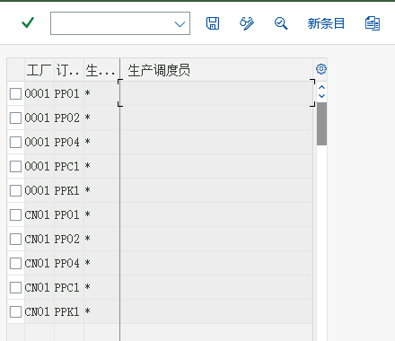
画面 776image787.png · 440×380 -
维护的这些参数将影响生产订单排程的各种操作和计算

画面 777image788.png · 377×593 -
点击新条目

画面 778image789.png · 600×892
维护和订单类型相关的生产订单参数
4 画面 / 3 步-
维护的这些参数将影响生产订单排程的各种操作和计算

画面 779image790.png · 326×490 
画面 780image791.png · 505×349 -
点击新条目

画面 781image792.png · 590×765 -
原书中结果分析码为FERT

画面 782image793.png · 618×448
维护和确认相关的生产订单参数
3 画面 / 3 步-
确认是生产订单管理中的一项工作，它既可以是针对整个订单的，也可以是针对工序的，它是由负责人员认可或填写订单的产出、时间等信息，并由系统执行检查、倒冲等操作的过程。

画面 783image794.png · 417×577 -
按上一屏继续操作（画面 784）

画面 784image795.png · 611×511 -
点击新条目

画面 785image796.png · 547×686
新建物料清单
CS013 画面 / 3 步R999-100罩壳1PCR999-200飞轮1PCR999-300管轴1PCR999-400支撑架1PCR999-500金属片0.60M2R999-100罩壳1PCR999-200飞轮1PCR999-300管轴1PCR999-400支撑架1PCR999-500金属片0.60M2F999-100 P999 1
-
后勤－生产－主数据－物料清单－物料 BOM — CS01 新建

画面 786image797.png · 445×424 -
按上一屏继续操作（画面 787）
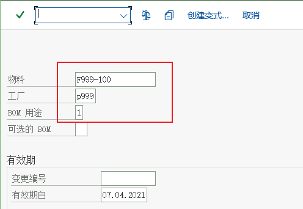
画面 787image798.png · 496×342 -
项目类别都用L,库存项目
录入 上述数据，点击保存即可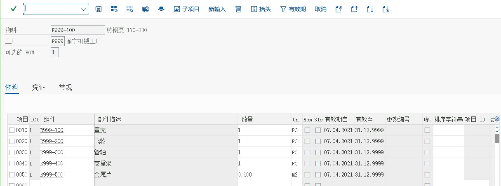
画面 788image799.jpeg · 1215×452
显示物料所用处清单
前台CS154 画面 / 4 步-
后勤－生产－主数据－物料清单－报告－调用清单—所用处清单 CS15-物料
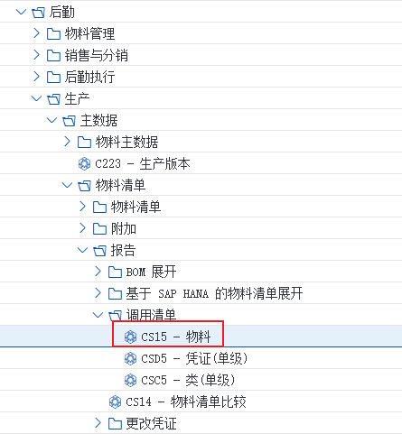
画面 789image800.png · 445×481 -
按上一屏继续操作（画面 790）
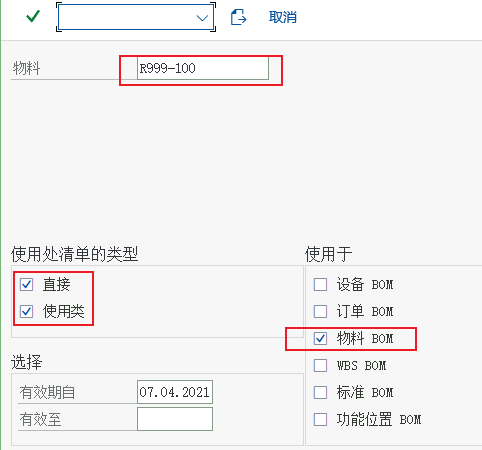
画面 790image801.png · 482×450 -
点击下一屏，如下图所示

画面 791image802.png · 647×516 -
点击 F8 运行，如下

画面 792image803.png · 879×217 教材笔记这个报告显示了罩壳被用于物料 F999-100 的生产中
定义工作中心负责人
3 画面 / 3 步-
解释： 颐宁公司有 “ 物料准备”，“ 切割” 这样一些工作中心，生产产成品 “ 铸钢泵 170-230 ” 需要以一定的次序在这些工作中心执行各道工序，SAP 称之为“工艺路线”。这些我们在之后维护。本步骤中，我们需要为各工作中心在后台定义一些负责人，这些负责人都会分配到工作中心的主数据中。为简化，我们只定义了一个工作中心负责人。
生产－基本数据－工作中心－通用数据－确定负责人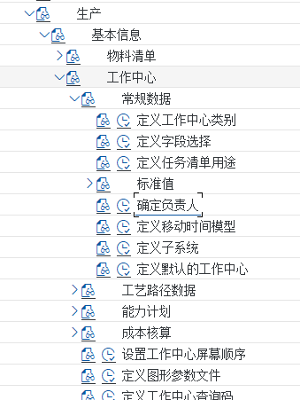
画面 793image804.png · 339×451 -
按上一屏继续操作（画面 794）
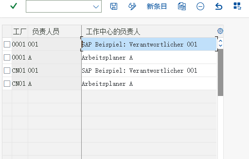
画面 794image805.png · 512×328 教材笔记点击新条目， -
P999 999 颐宁工作中心负责人

画面 795image806.png · 670×261
定义工作中心的控制码
3 画面 / 3 步点击新条目
-
解释： 这个控制码控制着工艺路线中的某个工序需要执行的业务功能，以及 SAP 如何处理这个工序。比如这个工序是否需要排程、是否需要产生产能需求、是否需要打印公票、是否需要返工工序、是否需要计算成本、是否和如何进行确认、是内部还是外部处理。
生产－基本数据－工作中心－工艺路径数据－定义控制码
画面 796image807.png · 376×522 -
按上一屏继续操作（画面 797）
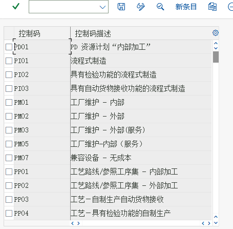
画面 797image808.png · 455×446 -
控制码 ZKM1 颐宁工作中心控制码调度

画面 798image809.png · 646×499 教材笔记确定能力需求 成本教材笔记确认 2 确认可能但不必需
新建人工工时能力
CR115 画面 / 2 步-
解释： 颐宁公司的各人工工作中心的资源是共享的，它们的生产能力是可以调配使用的，所以我们在这个步骤将统一核算整个工厂的人工工时能力，在后面的步骤中，当新建人工工时类别的工作中心时，我们将通用人工工时能力分配给它们。当然能力也可以定义在工作中心这一层。
后勤－生产－主数据－工作中心－能力－CR11-创建
画面 799image812.png · 256×385 
画面 800image813.png · 465×462 画面 799image812.png · 256×385 画面 800image813.png · 465×462 -
Labor 只是定义，002 是工时

画面 803image814.png · 598×665 教材笔记单项能力数量，指能分割使用的单项能力有 10 个。比如，如果颐宁公司总是以班组为单位管理的，这里就是班组的数量。如果是以单个工人调配的，那这里就是工人的数量。这里需要和后面工艺路线的定义保持定义上的一致。教材笔记能力利用 100 指 100%能有效利用。教材笔记和有限计划有关。指在作有限排程的时候，系统需要将这种能力的可用数量和负载数量考虑进去。只有这里打勾的能力才会在能力可用性检查中被考虑。
新建机器工时能力
CR112 画面 / 2 步-
解释： 和人工工时能力类似，颐宁公司的各机器工作中心的资源也是共享的。后勤－生产－主数据－工作中心－能力－CR11-创建
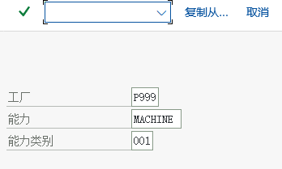
画面 804image815.png · 348×209 -
按上一屏继续操作（画面 805）
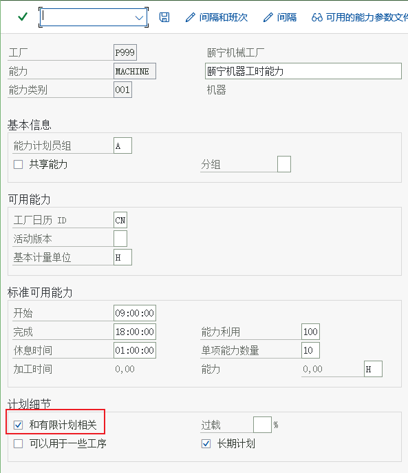
画面 805image816.png · 593×686
新建人工工时类别工作中心
CR01KP2622 画面 / 15 步-
后勤－生产－主数据－工作中心－工作中心－CR01-创建

画面 806image817.png · 236×265 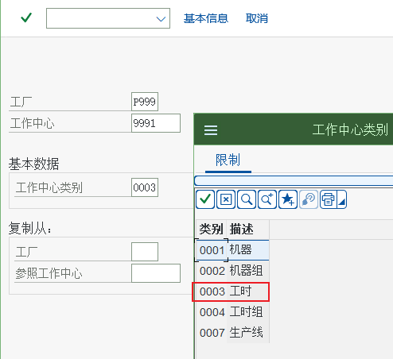
画面 807image818.png · 494×452 -
回车后如下所示
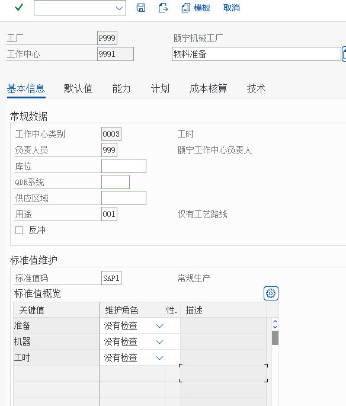
画面 808image819.png · 584×685 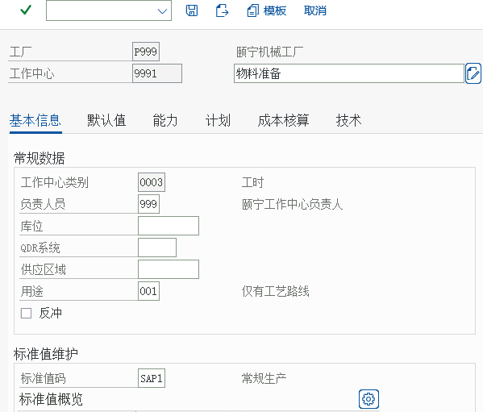
画面 809image820.png · 599×511 -
将工时选择为必须维护
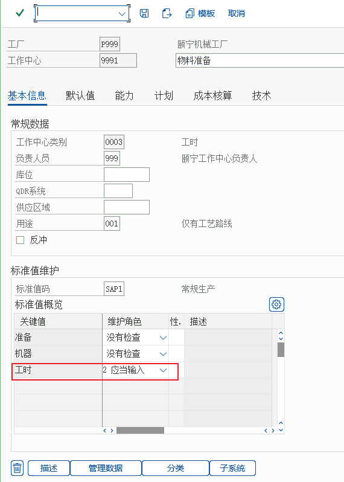
画面 810image821.png · 570×798 教材笔记点击默认值 -
按上一屏继续操作（画面 811）

画面 811image822.png · 628×693 -
ZKM1 是我们在之前定义的缺省控制码
MIN 是指分钟点击调度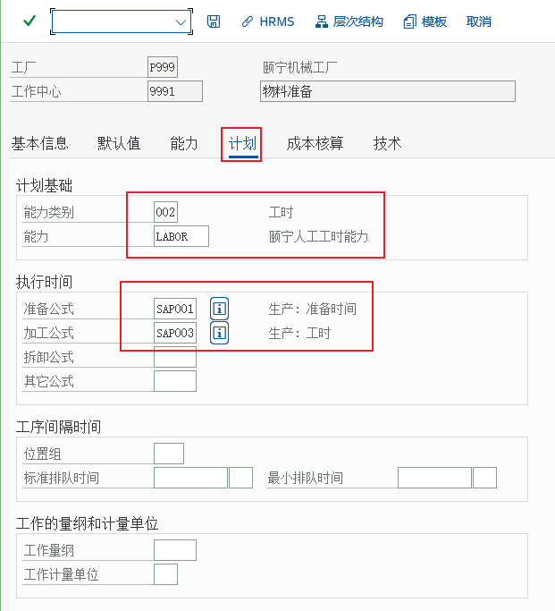
画面 812image823.png · 621×683 -
点击成本核算

画面 813image824.png · 643×818 -
此处活动类型由于在 CO 模块未完成 KP26，故无法继续接下来定义切割

画面 814image825.png · 347×361 -

画面 815image826.png · 600×728 -
按上一屏继续操作（画面 816）

画面 816image827.png · 642×677 
画面 817image828.png · 613×666 
画面 818image829.png · 620×603 -
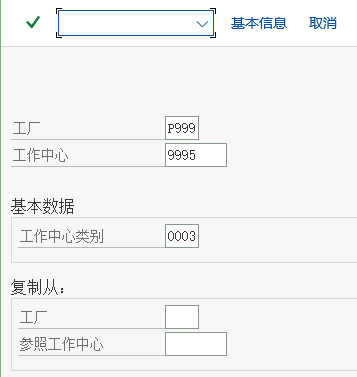
画面 819image830.png · 357×377 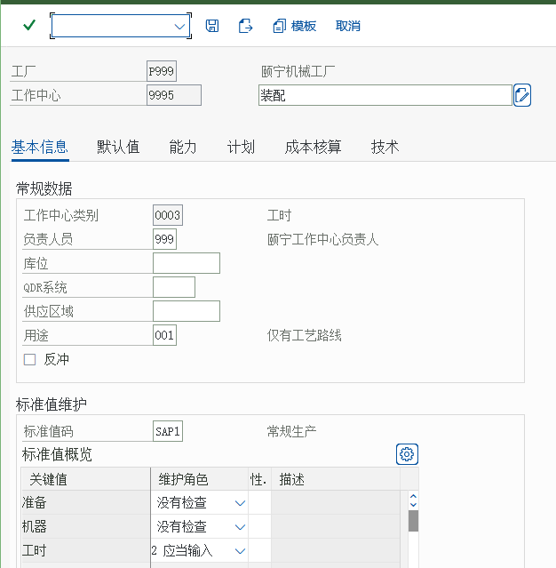
画面 820image831.png · 626×639 -
9995 装配

画面 821image832.png · 608×597 -

画面 822image833.png · 639×693 -
按上一屏继续操作（画面 823）

画面 823image834.png · 591×611 -

画面 824image835.png · 610×646 
画面 825image836.png · 571×605 
画面 826image837.png · 581×440 -
9996 校验和交付

画面 827image838.png · 600×530
新建机器工时类别工作中心
CR0110 画面 / 5 步-
按上一屏继续操作（画面 828）

画面 828image839.png · 466×476 -

画面 829image840.png · 580×608 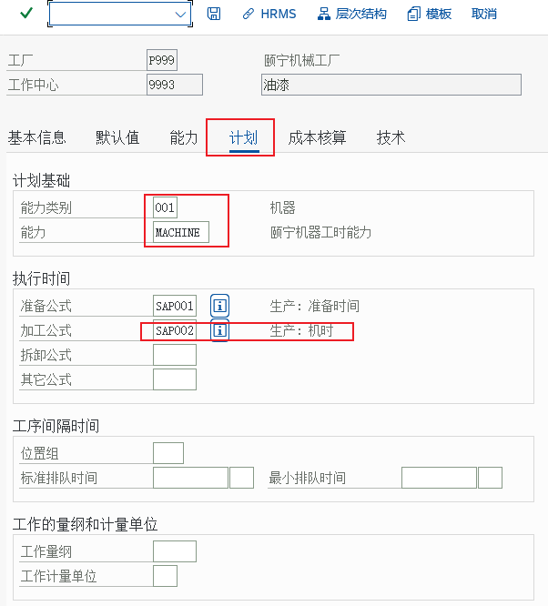
画面 830image841.png · 602×666 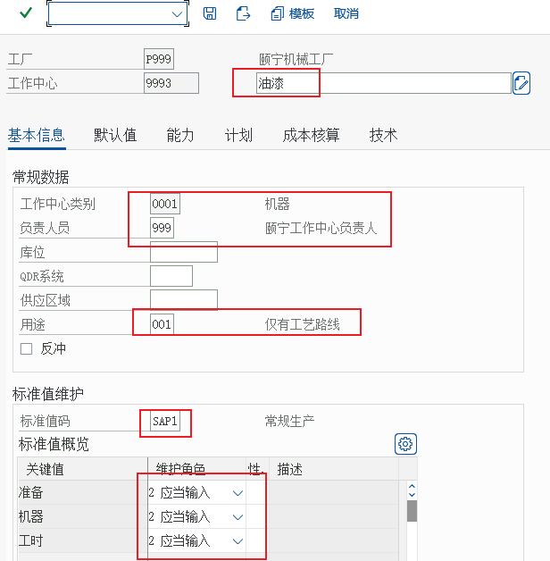
画面 831image842.png · 616×628 -
按上一屏继续操作（画面 832）

画面 832image843.png · 589×614 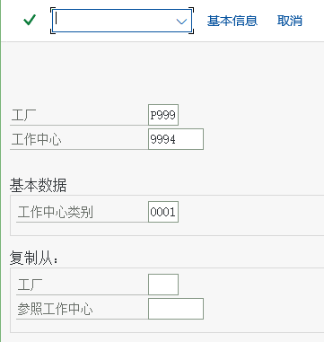
画面 833image844.png · 361×381 教材笔记创建预装配工作中心 9994 -
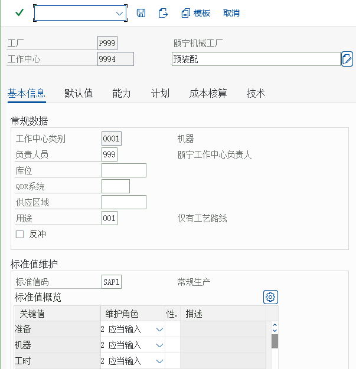
画面 834image845.png · 603×626 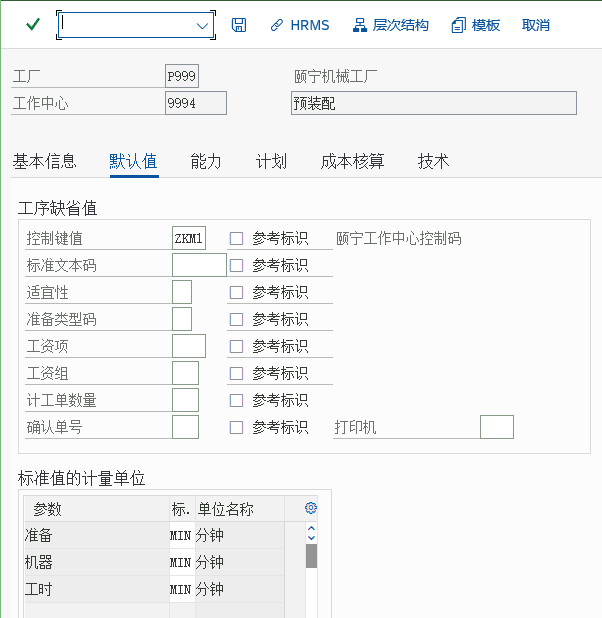
画面 835image846.png · 602×618 
画面 836image847.png · 607×686 -
按上一屏继续操作（画面 837）

画面 837image848.png · 621×628
新建工艺路线
CA0120 画面 / 18 步-
解释： 颐宁公司有 “ 物料准备”，“ 切割”，“ 装配”，“ 校验和交付” 这样四个以人工工时为主的工作中心。

画面 838image849.png · 270×367 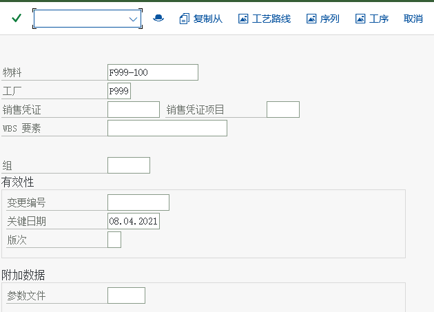
画面 839image850.png · 630×453 -
按上一屏继续操作（画面 840）
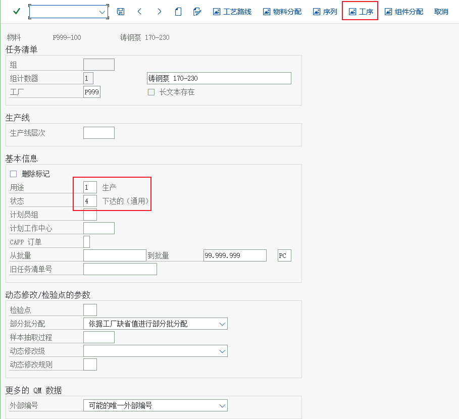
画面 840image851.png · 909×830 教材笔记00109991P999ZKM1准备罩壳和金属片00209992P999ZKM1切割金属片00309994P999ZKM1预装配00409995P999ZKM1装配00509996P999ZKM1检验和交付00109991P999ZKM1准备罩壳和金属片00209992P999ZKM1切割金属片00309994P999ZKM1预装配00409995P999ZKM1装配00509996P999ZKM1检验和交付状态 4 指可以进行各项业务点击工序 -
组计数器：SAP 中工艺路线是通过组编码和组计数器两者来编号的。组计数器可以定义一个产品的多条工艺路线。比如当不同的批量大小时可以用不同的工艺路线。我们这里只维护一条工艺路线。

画面 841image852.png · 1183×466 -
点击回车后，或者双击 0010 工序后

画面 842image853.png · 644×603 教材笔记由于前序未将 LAB 与工作中心关联，此处会提示 -
按上一屏继续操作（画面 843）

画面 843image854.png · 1341×382 -
点击顺序

画面 844image855.png · 1043×227 -
按上一屏继续操作（画面 845）

画面 845image856.png · 1068×341 -
解释： 我们看到现在我们为工艺路线定义了一条“标准顺序”，也就是刚才各道工序。但是在生产“铸钢泵 170-300”的过程中，“ 油漆罩壳”的工序是和上面的切割金属片并行的。下面我们来定义这个并行的顺序。点击新建按钮
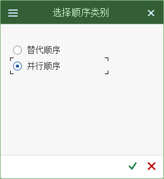
画面 846image857.png · 277×302 -
按上一屏继续操作（画面 847）

画面 847image858.png · 711×318 -
回车后

画面 848image859.png · 732×453 -
分工序 10 指完成 0010 工序后开始该并行作业
返回工序指完成该并行工序后，返回 0030 工序点击序列
画面 849image860.png · 1072×911 -
0010 9993 P999 ZKM1 油漆罩壳

画面 850image861.png · 1362×452 -
我们看到已经新建了个并行顺序，下面来具体定义该并行顺序选中“顺序 1”行，点击工序
双击行项目，工序为0010，或者回车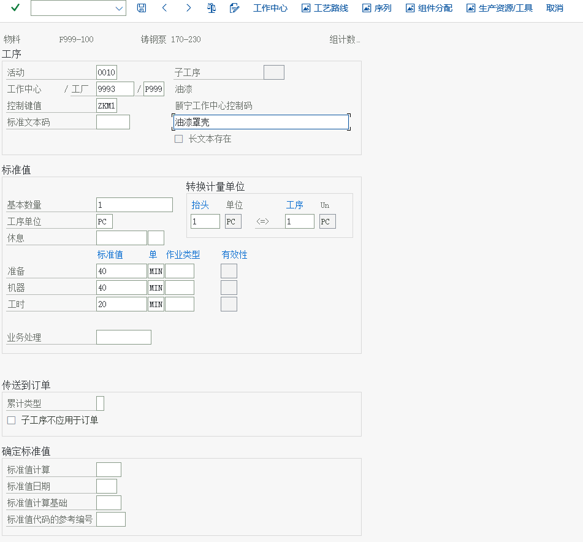
画面 851image862.png · 951×884 -
点击组件分配

画面 852image863.jpeg · 1217×407 原理说明解释：定义完工序，下面我们来定义各种原料分别在哪个工序投料。这个屏幕是该产品的 -
BOM 组件

画面 853image864.png · 943×610 -
解释： 我们可以直接填入投料的工序，也可以从清单中选择工序点击工序活动清单
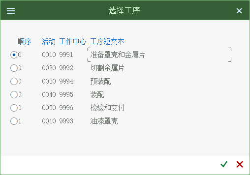
画面 854image865.png · 508×356 -
从屏幕可以看出，工序 20 和工序 10 是平行的。选择工序 10，点击确认

画面 855image866.png · 880×610 原理说明解释：继续物料的分配，最终结果如下，最后点击保存 -
按上一屏继续操作（画面 856）

画面 856image867.png · 1179×374 
画面 857image868.png · 403×60
拆分工序
CA026 画面 / 4 步解释：颐宁公司的人工类产能和机器产能都是由 10 组产能单位构成的。我们需要在产成品的工艺路线中决定，生产订单是在一个产能单位上顺序生产，还是要将生产订单的数量拆分到各产能单位上生产。这个控制参数是在各工序上的，它会影响订单排程的时间。本步骤中，我们将工艺路线中的所有工序都设定为需要按产能单位拆分
| 项目 | 文档中的取值 |
|---|---|
| 双击顺序 | 1 |
| 双击工序 | 0010 |
-

画面 858image869.png · 617×643 -
后勤－生产－主数据－工艺路线－工艺路线—标准工艺路线－CA02-更改
点击工序进入如下页面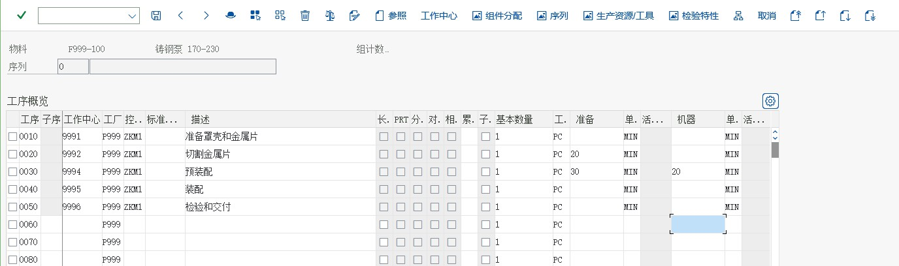
画面 859image870.jpeg · 1376×408 -
双击“工序 0010 ”，进入

画面 860image871.png · 1084×530 教材笔记在拆分，选择所需分解，点击保存，不过我们还需要更改其他工序点击顺序 -
按上一屏继续操作（画面 861）
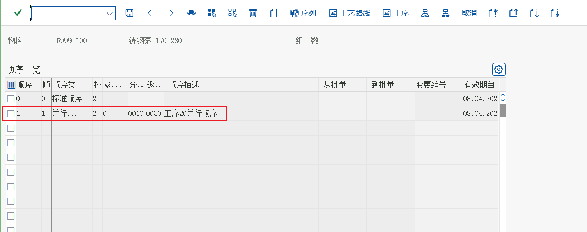
画面 861image872.png · 1083×428 
画面 862image873.png · 1293×860 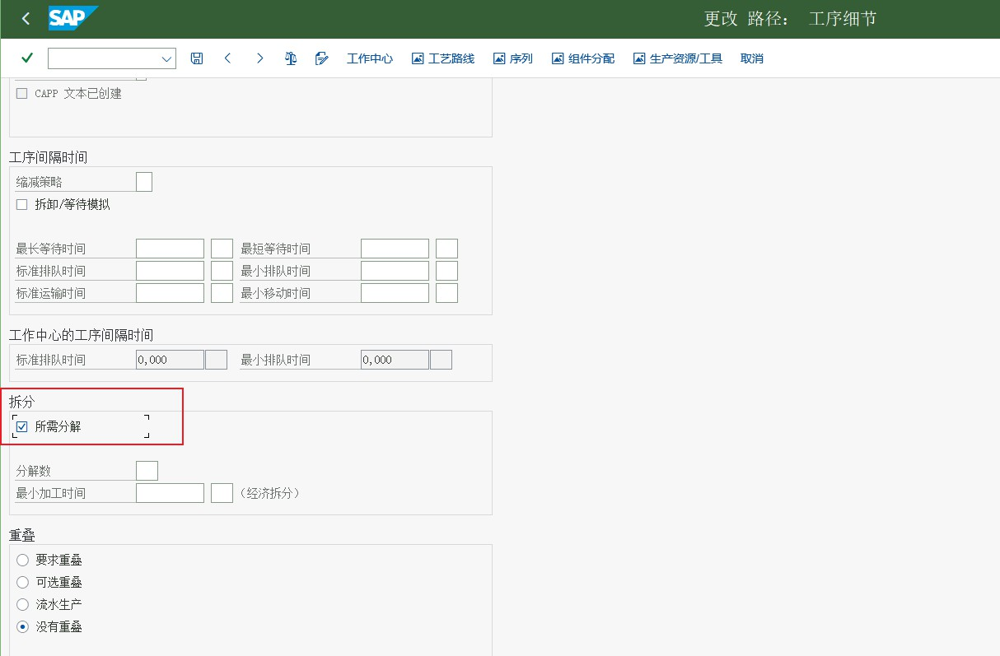
画面 863image874.jpeg · 1214×797 教材笔记在“所需分解”前的方框打勾，保存
新建产产品的生产计划视图
4 画面 / 3 步-
后勤－生产－主数据－物料主数据－物料－创建（特殊）－MMF1-成品
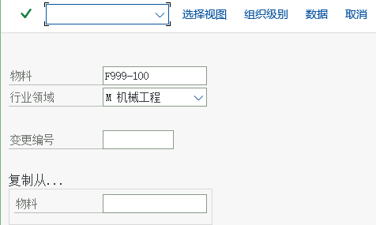
画面 864image875.png · 476×285 -
解释： MM 中，我们没有维护产成品的生产计划视图。
选择工作计划视图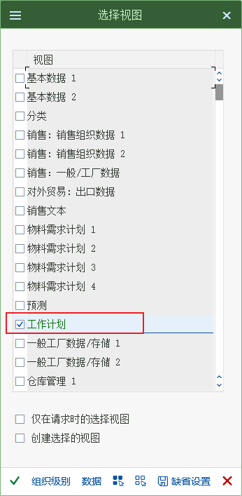
画面 865image876.png · 346×707 -
按上一屏继续操作（画面 866）
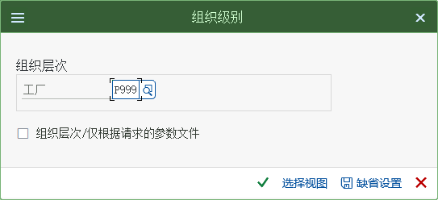
画面 866image877.png · 543×248 
画面 867image878.png · 772×652
定义成本构成结构
后台16 画面 / 14 步选中 Z1，双击左栏的“带有属性的成本组件”。
解释：
控制成本份额。可变成本。只有可变成本会在产品成本估算中显示
选中 Z1 选择有效，然后双击左栏“带有属性的成本组件”
-
解释： 颐宁公司生产的“铸钢泵 170-230”的 BOM 和工艺路线已经在系统里维护，接下 来我们可以计算该产成品的标准成本了。产品成本是 PP 和 CO 最重要的集成。本步骤我们需要在后台配置和产品成本有关的一个重要参数：“ 成本构成结构”。在成本结构中我们定义颐宁公司的产品成本是如何构成的，各成本构成和成本要素的关系怎样的，并且将成本构成结构分配给工厂

画面 868image879.png · 372×513 -
按上一屏继续操作（画面 869）

画面 869image880.png · 810×606 -
解释： 该屏幕的左侧是维护“成本构成结构”参数的各层次。现在我们在最上层，因此屏幕的右侧是目前系统中已经有的成本构成结构的清单。我们要定义一个新的成本构成结构。点击新条目

画面 870image881.png · 832×355 -
在弹出框中，点击新条目

画面 871image882.png · 967×779 -
汇总成本组件。指该成本组件的成本将被汇总到更高一层的产品的该成本组件成本中双击左栏“设置-成本组件-成本要素区间”
点击新条目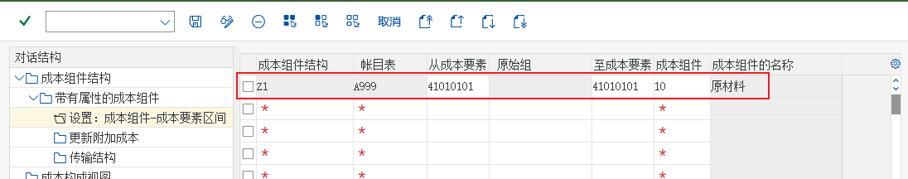
画面 872image883.png · 1096×216 -
双击左栏“设置-组织-成本构成格式”
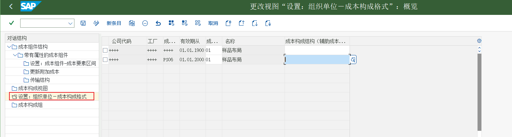
画面 873image884.png · 1472×396 教材笔记++++ ++++ ++++ 01.01.2021 Z1 颐宁成本组件结构 -
解释： 我们在这里将我们新建的成本构成结构分配给相关的公司代码，工厂，成本核算变式和一定的有效期
按新条目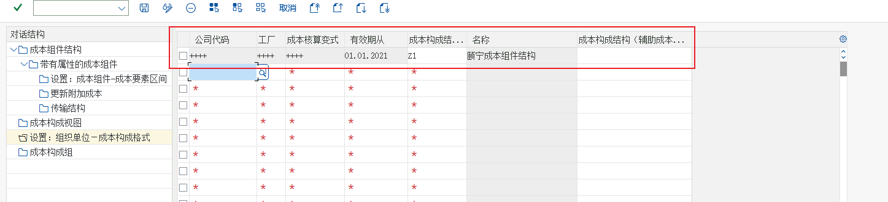
画面 874image885.png · 1447×331 -
我们回到成本构成结构定义的最上层，然后激活该成本构成结构，即勾选有效

画面 875image886.png · 874×321 -

画面 876image887.png · 1006×725 -
解释，我们刚才只定义了该成本构成结构中的一个成本组件，现在我们接着将机器工时，人工工时和准备工时成本分别定义成三个成本组件
点击新条目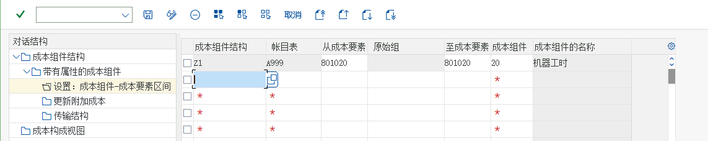
画面 877image888.png · 1143×229 -
双击左栏“成本组件结构”用同样的办法吧 030，040 设置好。
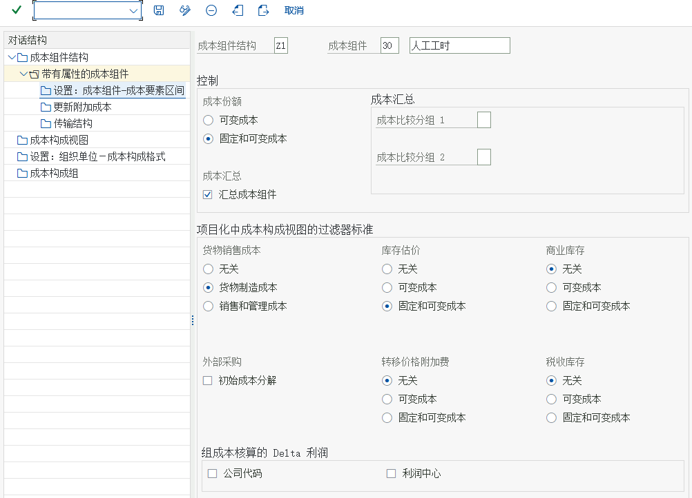
画面 878image889.png · 1002×723 -
按上一屏继续操作（画面 879）

画面 879image890.png · 1111×275 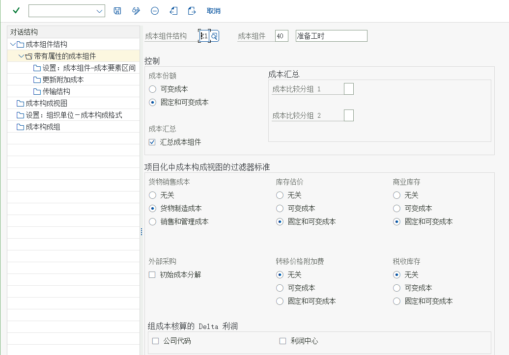
画面 880image891.png · 1036×723 -
完成后，点击返回，

画面 881image892.png · 877×320 
画面 882image893.png · 1114×339 -
双击左栏的“成本组件结构”
将除 Z1 外的成本结构组件的有效勾都去掉，保存。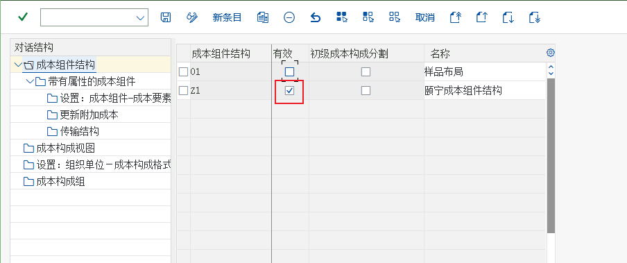
画面 883image894.png · 904×379
定义估计变式
后台7 画面 / 7 步-
控制－产品成本控制－产品成本计划－带数量结构的成本估算－成本核算变式：组件－定义评估变式
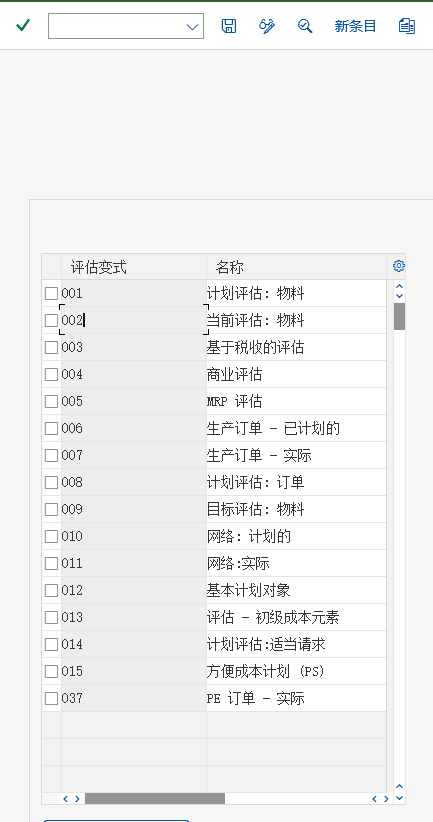
画面 884image895.png · 433×822 -
解释： 在产品成本核算中，最重要的参数是“成本核算变式”，我们将在 21 学到。成本核算变式又是由定义成本核算不同方面的较小的参数构成的，其中本步骤是与定义物料、作业、外包、外部加工、间接费用等的估价标准相关的，SAP 称之为评估变式

画面 885image896.png · 320×605 -
解释： 我们利用系统已经有的估价变式
双击“评估变式：001 ”，进入
画面 886image897.png · 686×450 教材笔记估价变式。点击返回键。双击 007，设置如下 -
估价变式 001 是系统预设的物料计划估价变式。我们将在以后的操作中使用 001 作为物料
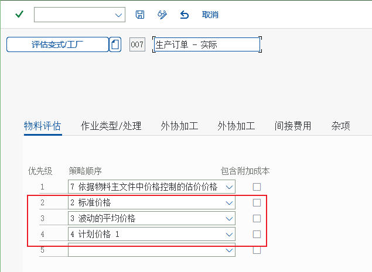
画面 887image898.png · 635×465 -
007 将被用于订单实际成本的计算中。我们也来查看一下它的配置。点击评估变式/工厂

画面 888image899.png · 652×809 教材笔记点击新条目 -
按上一屏继续操作（画面 889）

画面 889image900.png · 531×460 -
点击两次返回，然后点击保存

画面 890image901.png · 612×351
定义日期控制
3 画面 / 3 步-
解释： 日期控制也是成本核算变式中的一个参数。它控制成本核算中和日期相关的内容。后台

画面 891image902.png · 381×596 -
按上一屏继续操作（画面 892）

画面 892image903.png · 404×493 -
点击新条目

画面 893image904.png · 659×431
定义数量结构控制
后台PC018 画面 / 4 步-
解释： “ 数量结构控制” 也是成本核算变式中的一个参数，在 SAP 中在和产品成本相关的场
合谈到“数量结构”，其实就是指 BOM 和工艺路线，所以数量结构控制主要是控制系统如何选取 BOM 和工艺路线用于成本核算。
画面 894image907.png · 428×541 
画面 895image908.png · 572×479 画面 894image907.png · 428×541 画面 895image908.png · 572×479 -
双击 PC01 行

画面 898image909.png · 740×496 教材笔记点击 PC01 左边的新建 -
按上一屏继续操作（画面 899）

画面 899image910.png · 683×787 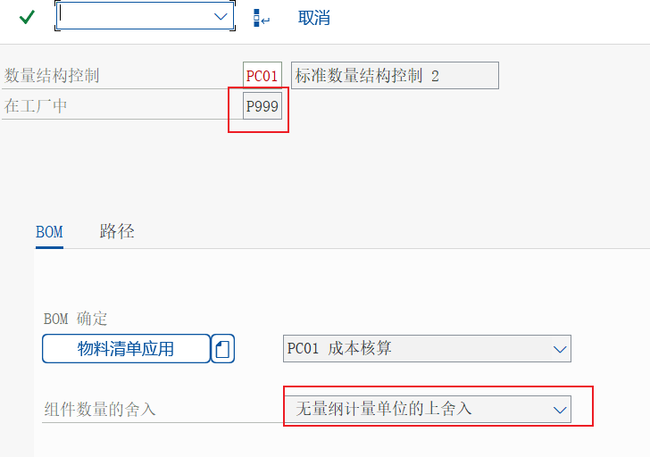
画面 900image911.png · 728×512 教材笔记点击新条目 -
点击路径
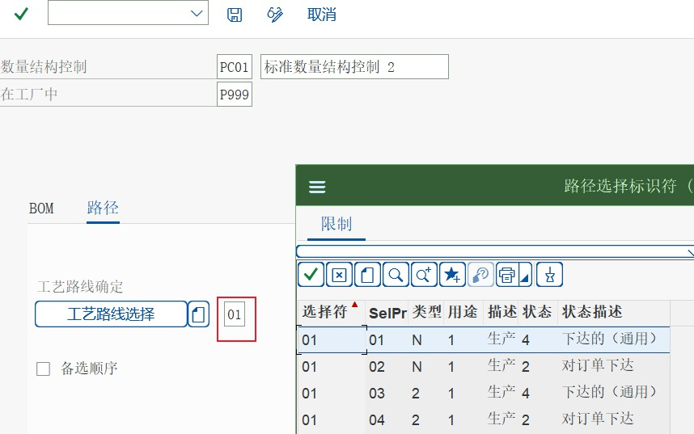
画面 901image912.jpeg · 858×537 教材笔记保存
定义成本核算变式
后台3 画面 / 3 步-
控制－产品成本控制生产－产品成本计划－带数量结构的成本估算－定义成本核算变式

画面 902image913.png · 549×615 -
复制 PPC1 并修改

画面 903image914.jpeg · 662×569 -
点击更新

画面 904image915.jpeg · 687×575
新建产品成本估算
前台CK11N10 画面 / 3 步解释：一般企业的“成本核算日期从”为下月初，这里未来进行计算改为操作当日，其余日期保持不变，点击回车键进入
-
解释： 颐宁公司现在要根据产成品“铸钢泵 170-230”的 BOM 和工艺路线来技术更精确的产品成本，来取代原来在物料主数据中的估算的标准成本。
会计核算－控制－产品成本控制－产品成本计划－物料成本核算－带数量结构的成本核算－CK11N 创建
画面 905image916.png · 476×431 
画面 906image919.png · 414×558 
画面 907image920.jpeg · 750×502 画面 906image919.png · 414×558 画面 907image920.jpeg · 750×502 原理说明注意：核对你的成本计算结果是否和屏幕上的一致，并分析这个结果是怎么产生的，同时将这个结果写下来。 -
解释： 这就是该产成品的成本核算。屏幕左边是该产品的组件结构，右侧中部是不同视图的成本。我们主要使用的是“制造成本”。右侧下部是按项目明细的成本明细分析，我们可以看到按各道工序成本累加。我们可以通过相关菜单切换到成本构成分析。
成本核算批量 10PC 是从产成品主数据的成本视图 1 中传递过来的。点击保存出现
画面 910image921.jpeg · 1461×665 -
按上一屏继续操作（画面 911）
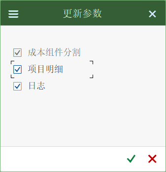
画面 911image924.png · 337×348 
画面 912image925.png · 175×42 画面 911image924.png · 337×348 画面 912image925.png · 175×42
标记价格
前台CK2412 画面 / 4 步-
解释： 这个步骤 SAP 称为“标记价格”，我们将把前面一个步骤的产成品价格估算“标记”成物料主数据中的“未来价格”

画面 915image926.png · 466×578 -
点击允许发布

画面 916image929.png · 802×723 
画面 917image930.png · 854×408 
画面 918image931.png · 382×280 画面 916image929.png · 802×723 画面 917image930.png · 854×408 -
点击保存后出现如下页面
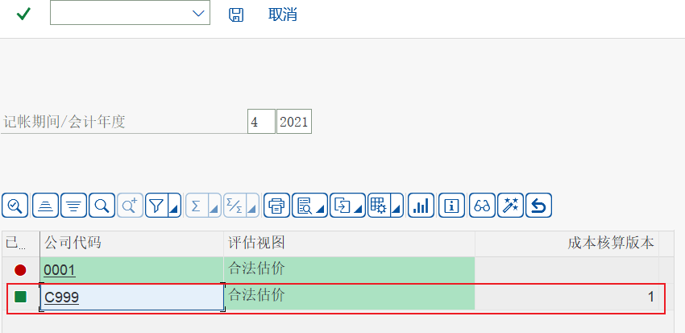
画面 921image932.png · 850×413 -
解释： 颐宁公司的账本月被打开，点击退回，点击 F8,如下图，再按返回如下图
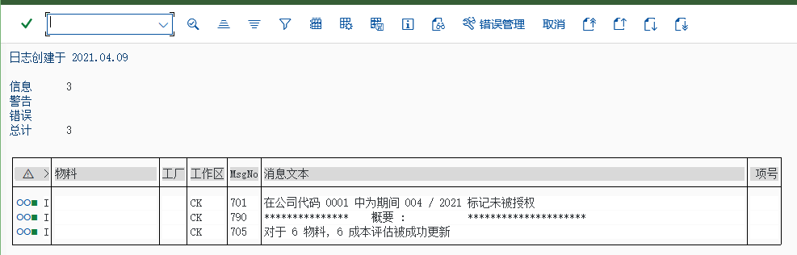
画面 922image935.png · 987×316 
画面 923image936.png · 289×33 
画面 924image937.png · 658×298 画面 922image935.png · 987×316 画面 923image936.png · 289×33 教材笔记此时价格已经更新，
显示产成品的将来计划价格
前台MM036 画面 / 3 步-
解释： 本步骤中，我们将到铸钢泵 170-230 的主数据中去看价格标记的结果新价格将被更新为将来的计划价格。
后勤－物料管理－物料主数据－物料－显示－MM03-显示当前
画面 927image938.png · 627×165 -

画面 928image941.png · 697×314 
画面 929image942.png · 457×688 画面 928image941.png · 697×314 画面 929image942.png · 457×688 -
此处应该显示计划价格 2538.66
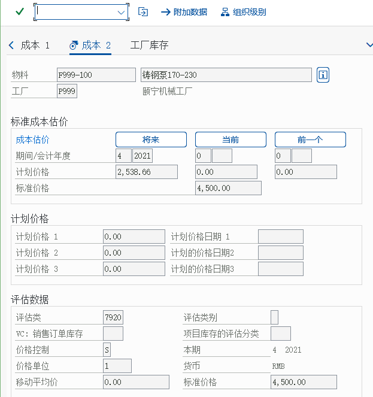
画面 932image943.png · 623×663
发布价格
CK242 画面 / 2 步-
解释： 此步将未来价格发布，这样系统将更新产成品的标准成本。前台
会计－控制－产品成本控制－产品成本计划－物料成本核算－CK24-价格更新
画面 933image944.png · 611×587 -
点击发布点击 F8

画面 934image945.png · 679×174 教材笔记此页面本来会显示标准价格 3072（本应该是 4440.32 检查）原理说明解释：如果该产成品有库存存在，系统还会自动生产会计凭证。颐宁公司在系统中现在还没有产成品库存，所以只是更新标准价格。
显示产成品已发布的计划价格
MM038 画面 / 4 步-
解释： 依然到产成品的物料主数据中去查看刚才价格发布的效果。后勤－物料管理－物料主数据－物料－显示－MM03-显示当前

画面 935image948.png · 346×545 
画面 936image949.png · 496×130 画面 935image948.png · 346×545 画面 936image949.png · 496×130 -
按上一屏继续操作（画面 939）

画面 939image950.png · 543×275 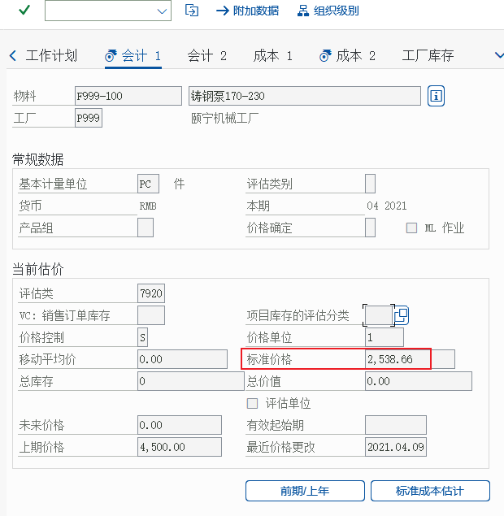
画面 940image951.png · 620×635 -
应该标准价格会是 4440.32（原因同前步骤）
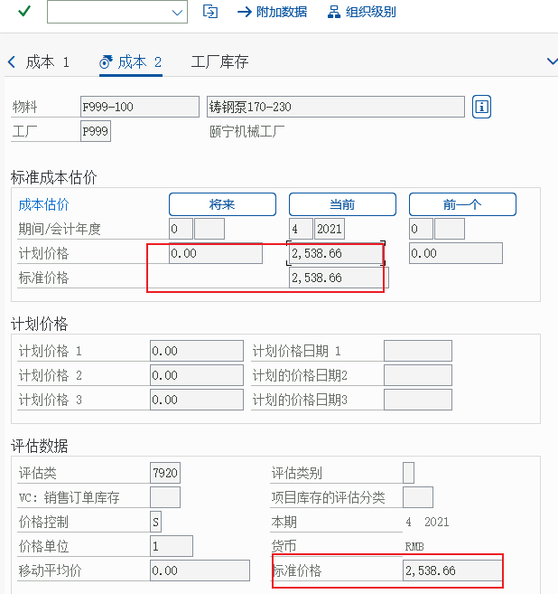
画面 941image952.png · 618×657 教材笔记点击当前，可以看到物料成本估算 -
按上一屏继续操作（画面 942）

画面 942image953.png · 1199×898
定义实际成本核算的估价变式
后台3 画面 / 3 步-
解释： 前面我们计算并发布了产成品的标准成本，在本步骤中我们将为生产订单的实际成本估算分配估价变式。
画面 943image954.png · 392×523 -
按上一屏继续操作（画面 944）

画面 944image955.png · 712×307 -
以上是已经分配了生产订单实际成本估价变式的工厂清单，点击新条目

画面 945image956.png · 631×129
定义在制品结果分析版本
后台4 画面 / 4 步-
解释： 在本教程使用的离散式生产模式下，我们按生产订单来管理生产，对于月末未完工的生产订单，系统是将生产订单的实际成本余额转作在制品。同时，我们也可以对在制品进行结果分析来分析到目前位置生产订单的效率，这个概念和 SAP 中项目管理等的结果分析是一致的。在本步骤中我们定义一个简单的在制品结果分析版本。

画面 946image957.png · 368×619 -
按上一屏继续操作（画面 947）
画面 947image958.png · 475×432 -
点击新条目

画面 948image959.png · 448×446 教材笔记选择 C999 进入维护，这里是在产品结果分析的详细屏幕，当中的按钮是可以展开详细维护的。为了简便起见，我们只作简单的维护。 -
按上一屏继续操作（画面 949）
画面 949image960.png · 569×415
定义可用性检查
后台2 画面 / 1 步-
生产－商店底价控制－工序－可用性检查－定义检查组

画面 950image961.png · 313×529 
画面 951image962.png · 791×268 教材笔记这里我们使用 02，用系统预设的
定义可用性检查范围
后台3 画面 / 3 步-

画面 952image963.png · 350×483 -
解释： 此步中，我们根据物料主数据中的 “ 可用性检查组” 和生产订单类型中的 “ 检查规则”确定了可用性检查的范围。。
生产－商店底价控制－工序－可用性检查－定义检查范围
画面 953image964.png · 493×516 -
和本教材相关的组合是“02 检查组”和“PP 检查规则”双击

画面 954image965.png · 673×632 原理说明解释：这里定义了哪些库存，哪些向内或向外的物料移动是包含在检查范围内的等等，比如质检库存是包含在可用物料内的，而安全库存是不包含的，等等
定义可用性检查控制
PP01PP025 画面 / 4 步-
解释： 在颐宁公司对于标准生产订单类型 PP01，我们是否需要在订单创建或下达的时候自动检查物料的可用性、PRT（生产资源和工具）的可用性、产能的可用性，以及检查规则等后台
画面 955image966.png · 387×486 
画面 956image967.png · 595×240 -
用复制模板 0001 的方式维护颐宁工厂，选中工厂 0001，类型PP01 、PP02两行复制

画面 957image968.png · 600×524 -
按上一屏继续操作（画面 958）

画面 958image969.png · 573×713 -
解释： 我们没有在颐宁工厂的标准生产订单 PP01 创建的时候自动检查三种可用性，但是这并不禁止我们手工出发可用性检查
画面 959image970.png · 613×335
维护物料主数据的计划策略组
前台MM024 画面 / 3 步-
后勤－生产－主数据－物料主数据－更改－MM02-立即
画面 960image971.png · 473×174 -
画面 961image972.png · 344×300 -
按上一屏继续操作（画面 962）

画面 962image973.png · 543×275 
画面 963image974.png · 659×584 教材笔记40 首先它是按库存生产的，生产计划的依据是计划部门维护的独立需求计划，但是销售订单对于计划仍然是有影响的，销售订单会消耗独立需求计划。当销售订单消耗完独立需求计划时，多出计划的订单需求将增加生产计划。这种策略在按库存生产（非按单生产的）组装生产中比较多，但是和生产量非常巨大的，同样是按库存生产的日用品又不一样教材笔记重复同样的方法，维护 T999-100
创建物料的独立需求计划
MD615 画面 / 5 步-
后勤－生产－生产计划编制－需求管理－已计划的独立需求－MD61-创建
画面 964image975.png · 319×433 -
画面 965image976.png · 503×443 -
解释： 填写从今天到下月末，创建月的周计划，回车后

画面 966image977.png · 971×240 -
具体数据可自行输入，保存后再输入 T999-100 的周独立需求计划
画面 967image978.png · 588×461 -
按上一屏继续操作（画面 968）

画面 968image979.png · 1062×228
显示MRP 清单
前台MD054 画面 / 3 步-
解释： 在运行 MRP 之前，先让我们来显示一下 MRP 清单。现在显示的是上次 MRP 运行的静态数据。
后勤－生产－物料需求计划－评估－MD05-MRP 清单
画面 969image980.png · 364×634 
画面 970image981.png · 463×294 -
按上一屏继续操作（画面 971）

画面 971image982.png · 1221×288 教材笔记由于没有运行 MRP，所以独立需求计划的数据没有传递过来，MRP 清单的数据是静态的，必须要到 MRP 运行后才会发生数值的变化。点击回退显示 T999-100 的MRP 清单 -
此处显示的上次运行 MRP 后的结果，请注意屏幕上方的时间戳。

画面 972image983.jpeg · 1222×399
显示库存/需求清单
前台MD046 画面 / 3 步-
后勤－生产－物料需求计划－评估－MD04-库存/需求清单
-
解释： 作为比较，我们来显示一下“库存/需求清单”。“ 库存/需求清单”是动态的，它显示的是当前某种物料的需求和供给的情况，并且已经将新创建的独立需求显示出来。

画面 977image988.png · 716×521 教材笔记切换 F999-100 -
按上一屏继续操作（画面 978）

画面 978image989.png · 733×752 原理说明注意，这里没有时间戳，库存需求清单中已经将独立需求计划的数据传递了过来。库存需求清单是动态变化的。

运行物料需求计划
MD0214 画面 / 9 步000000000xx库存 xx.xx.2021
| 项目 | 文档中的取值 |
|---|---|
| 都修改到了 | 15.05.2007 |
-

画面 979image990.png · 591×611 
画面 980image991.png · 388×454 -
解释： 本步骤将由系统自动按照 BOM 来展开物料需求后勤－生产－物料需求计划－计划－MD02-单项，多层

画面 981image992.png · 590×695 画面 982image993.png · 564×331 -
按上一屏继续操作（画面 983）
画面 983image994.png · 875×363 -
双击 F999-100，进入

画面 984image995.png · 1087×806 原理说明解释：这是产成品铸钢泵 170-230 MRP 运行的结果，我们可以看到对于每一项独立需求都安排了相应的计划订单。同时针对安全库存的旧的计划订单由于开始时间是在过去被修改到可行的时间 -
000000000xx/库存 xx.xx.2021
回退，双击物料 R999-100画面 985image996.png · 852×825 教材笔记查 看 完 后 ， 在 保 存 前 显 示结 果的 方框 前打 勾， 按回 车键 重新运行 MRP -
我们可以看到，对于原材料来说，生成了许多非独立需求 DepReq，这些非独立需求是针对产成品 F999-100的 ，这些非独立需求的日期考虑了生产提前期。针对这些需求系统生成了新的计划订单，于此同时，原来的采购申请也被修改了日期。
18.05.2021 PurRqs 0010000020/00010 14.05.2021画面 986image997.png · 726×234 -

画面 987image998.png · 574×737 -
重复上述方法，对 T999-100 运行 MRP
-
按上一屏继续操作（画面 992）

画面 992image1003.png · 704×238

将计划订单转换为生产订单
前台MD044 画面 / 4 步解释：计划订单中的内容被复制到了屏幕中的生产订单创建中。这时系统根据产成品的工艺路线重新安排了排程计划，确定了完成日期，
-
后勤－生产－物料需求计划－评估－MD04-库存/需求清单

画面 993image1004.png · 403×290 -
解释： MRP 运行有两个主要结果：一个是对产成品生成计划订单，另外一个是对原材料产生采购申请。本步骤中我们将产成品的计划订单转换成正式的生产订单。
我们可以在此清单中直接完成转换的操作
画面 994image1005.png · 795×248 -
解释： 屏幕中显示的是该计划订单的主要信息，在下方的一排按钮可以执行各种转换操作，我们将该计划订单转换成生产订单，点击生产订单键，点后退
画面 995image1006.png · 1055×346 -
按上一屏继续操作（画面 996）

画面 996image1007.png · 765×676 教材笔记点击保存教材笔记同样的方法把其他计划订单也转化为生产订单
显示生产订单清单
COOIS5 画面 / 2 步-
解释： 这一步我们到信息系统中去查看颐宁公司新的生产订单的清单。前台

画面 997image1008.png · 289×439 -
按上一屏继续操作（画面 998）

画面 998image1011.png · 832×807 
画面 999image1012.png · 1180×573 画面 998image1011.png · 832×807 画面 999image1012.png · 1180×573 原理说明解释：在这里我们看到了生产订单的清单。清单中是生产订单最主要的一些信息。这个清单并不是一个报表，从这个清单我们可以进行很多操作，比如更改生产订单、显示订单、打印生产订单等等。
将采购申请转换为采购订单
MD0413 画面 / 12 步解释：这是采购订单创建的屏幕，屏幕左侧是我们选中的采购申请号，右侧是采购订单创建的标准屏幕
输入供应商 10000001 长平铁工厂，采购组织 Y999 公司代码 C999，采购组 PG1
点击采用按钮，点击保存。
同样的方法把其他采购申请都转换为采购订单。
采购申请转换为采购订单，供应商和物料间 的关系参照供应商和物料之间的关系。
-
解释： 此步骤将 MRP 生成的对于原材料的采购申请转换为采购订单。前台
后勤－生产－物料需求计划－评估－MD04-库存/需求清单画面 1002image1013.png · 302×625 -
按上一屏继续操作（画面 1003）

画面 1003image1014.png · 418×285 -
我们仍然在库存需求清单中完成采购申请的转换

画面 1004image1015.png · 806×603 教材笔记具体位置如下图： -
可以看到，上步骤转换的生产订单也显示出来了。点击建立订单结构按钮
画面 1005image1016.png · 897×317 -
按上一屏继续操作（画面 1006）
画面 1006image1017.png · 1920×428 -
屏幕左侧出现了针对产成品的第一个生产订单 1000000的组建树，右侧依然是产成品的库存需求清单
双击原材料 R999-200，进入
画面 1007image1018.png · 1552×752 原理说明解释：这时，屏幕下侧变成了原材料罩壳的库存需求清单，我们可以看到来自于产成品的非独立需求 DepReq ,随着产成品生产订单的创建转换成了订单预留 OrdRes。现在我们将采购申请转换成采购订单 -
双击采购申请 PurRqs 0010000021/00010，进入
画面 1008image1019.png · 620×274 -
点击采购订单，进入
画面 1009image1020.png · 1504×955 教材笔记同样通过 MD04 将 R999-200、R999-300、R999-400 和 R999-500 以及贸易商品 T999-100 的 -
R999-500 10000000
T999-100 20000000 PG2画面 1010image1021.jpeg · 1459×816 -

画面 1011image1022.jpeg · 1428×859 画面 1012image1023.jpeg · 1441×916 -
画面 1013image1024.jpeg · 1433×876 -
按上一屏继续操作（画面 1014）
画面 1014image1025.jpeg · 1441×818
对采购订单收货
前台MIGO2 画面 / 2 步-
后勤－物料管理－库存管理－货物移动－收货－对采购订单－采购订单的 GR（MIGO）
画面 1015image1026.png · 461×553 -
按上一屏继续操作（画面 1016）

画面 1016image1027.jpeg · 1369×849 教材笔记此外对贸易商品库存地点为 0003教材笔记点击采用，将同一供应商的货物一次收了，记得勾上项目确定，库存地点为0001，采用同样的方法把原材料都收了，
输入采购发票
MIROMRBR5 画面 / 5 步-
解释： 这一步我们为前面的采购订单输入采购发票，并执行发票校验。前台
后勤－物料管理－后勤发票校验－凭证输入－MIRO-输入发票
画面 1017image1028.png · 228×194 -

画面 1018image1029.png · 1143×935 -
按上一屏继续操作（画面 1019）
画面 1019image1030.png · 957×893 -
重复同样的办法，对所有前面的采购订单进行发票预制运行事务代码 MRBR 下达冻结发票

画面 1020image1031.jpeg · 1709×311 -
点击批准发票 F9（绿色小旗帜）

画面 1021image1032.png · 1709×309
下达生产订单
前台CO026 画面 / 5 步-
后勤－生产－生产控制－订单－CO02-更改

画面 1022image1033.png · 465×633 -
解释： 和内部订单类似生产订单也是采用 “ 状态管理” 的，前面创建的生产订单还不能执行，只有在我们将它下达后，它才能被执行

画面 1023image1034.png · 458×309 -
按上一屏继续操作（画面 1024）

画面 1024image1035.png · 636×682 教材笔记在收货页，要把收货勾上勾 -
点击屏幕上方的状态，行显示了这张生产订单目前的状态，可以点击旁边的 i 按钮查看其状态 点击绿色旗帜下达生产订单，屏幕下方出现提示，下达已执行，点击保存，使用同样的方法下达其他生产订单
画面 1025image1036.png · 597×803 画面 1026image1037.png · 649×690 -
按上一屏继续操作（画面 1027）

画面 1027image1038.png · 623×362
对生产订单发货
前台8 画面 / 8 步-
解释： 产成品铸钢泵 170-230 的生产订单下达后就可以开始生产订单的执行，本步骤我们给生产订单发原材料。
后勤－物料管理－库存管理－货物移动－MB1A-发货画面 1028image1039.png · 641×447 -
回车

画面 1029image1040.png · 764×706 -
点击到订单，输入生产订单号及工厂

画面 1030image1041.png · 776×356 -
系统自动将订单中尚未发货的物料复制过来，点击保存
画面 1031image1042.png · 613×463 -
点击发货菜单---显示

画面 1032image1043.png · 363×194 -
回车后看到

画面 1033image1044.png · 810×544 教材笔记点击会计凭证 -
按上一屏继续操作（画面 1034）

画面 1034image1045.png · 375×207 -
双击会计凭证，如下
画面 1035image1046.png · 738×557 教材笔记退回，重复同样的办法，对其余已经下达的生产订单发货
工单确认
前台CO11N10 画面 / 8 步-
解释： 本步骤是生产订单的执行过程，对于已经完成的各道工序进行逐个的确认和报工，我们称之为工票确认或计工单。
画面 1036image1047.png · 734×769 -
按回车

画面 1037image1048.png · 1104×868 -
点击货物移动

画面 1038image1049.png · 1122×847 -
点击回车后，如下所示
画面 1039image1050.png · 679×748 
画面 1040image1051.png · 698×882 -
这里我们看到产成品尚未完工收获，点击保存按钮，继续对其他工序进行确认，这次我们选择并行的工序，油漆罩壳
点击货物移动，单击保存
画面 1041image1052.png · 734×690 教材笔记重复上述办法，对工序 20、30、40 和 50 进行报工。产成品 F999-100 共有六道工序，分别为 10、20、30、40、50 出对工序已经改动了计划人工工时外，其余都保留系统自动带出的计划值。 -
按上一屏继续操作（画面 1042）

画面 1042image1053.png · 661×739 -

画面 1043image1054.png · 653×663 
画面 1044image1055.png · 575×666 -
按上一屏继续操作（画面 1045）
画面 1045image1056.png · 696×656
对生产订单收货
前台MIGO2 画面 / 2 步-
解释： 产品铸钢泵 170-230 的生产经过各道工序的加工后正式完工，本步骤进行订单完工收货
画面 1046image1057.png · 398×468 -
按上一屏继续操作（画面 1047）

画面 1047image1058.png · 1411×716 教材笔记这个屏幕和采购收货类似，只是我们只需要填写的是生产订单(1000013)的编号。（记得在订单上收货页把收货的勾勾上）
显示生产订单的成本
前台CO035 画面 / 1 步-
按上一屏继续操作（画面 1048）

{kind=link}
{kind=link}
{kind=link}
{kind=link}
{kind=link}
{kind=link}
{kind=link}
{kind=link}
{kind=link}
{kind=link}
{kind=link}
{kind=link}
{kind=link}
{kind=link}
{kind=link}
{kind=link}
{kind=link}
{kind=link}
{kind=link}
{kind=link}
{kind=link}
{kind=link}
{kind=link}
{kind=link}
{kind=link}
{kind=link}
{kind=link}
{kind=link}
{kind=link}
{kind=link}
{kind=link}
{kind=link}
{kind=link}
{kind=link}
{kind=link}
{kind=link}
{kind=link}
{kind=link}
{kind=link}
{kind=link}
{kind=link}
{kind=link}
{kind=link}
{kind=link}
{kind=link}
{kind=link}
{kind=link}
{kind=link}
{kind=link}
{kind=link}
{kind=link}
{kind=link}
{kind=link}
{kind=link}
{kind=link}
{kind=link}
{kind=link}
{kind=link}
{kind=link}
{kind=link}
{kind=link}
{kind=link}
{kind=link}
{kind=link}
{kind=link}
{kind=link}
{kind=link}
{kind=link}
{kind=link}
{kind=link}
{kind=link}
{kind=link}
{kind=link}
{kind=link}
{kind=link}
{kind=link}
{kind=link}
{kind=link}
{kind=link}
{kind=link}
{kind=link}
{kind=link}
{kind=link}
{kind=link}
{kind=link}
{kind=link}
{kind=link}
{kind=link}
{kind=link}
对生产订单技术性完成
前台CO022 画面 / 2 步-
解释： 生产订单有四种系统标准状：创建、下达、技术性完成和关闭。当生产订单和生产相关的各项操作完成后应该将生产订单作技术性完成，但是这时候我们仍然可以做诸如订单结算等特殊的操作，当所有的操作都完成后，我们才将订单关闭。
后勤－生产－生产控制－订单－CO02-更改画面 1053image1064.png · 689×754 教材笔记查看状态 -
按上一屏继续操作（画面 1054）

画面 1054image1065.png · 629×807
{kind=link}
生产订单差异结算
前台KO882 画面 / 2 步-
解释： 46 的时候我们发现该生产订单的实际成本中有余额，这就意味着投入高过产出，我们称之为生产订单的差异，从会计角度来讲，生产订单差异需要做结算。
会计－控制－产品成本控制－成本对象控制－按订单划分的产品成本－期末结算－单一功能－KO88 单个处理
画面 1055image1066.png · 697×498 -
按上一屏继续操作（画面 1056）

画面 1056image1067.png · 910×265
生产订单成本报表显示
2 画面 / 1 步-
会计－控制－产品成本控制－成本对象控制－按订单划分的产品成本－信息系统－按订单的产品成本报表－详细的报表－KKBC_ORD-用于订单

画面 1057image1068.png · 546×401 
画面 1058image1069.jpeg · 1206×464 原理说明解释：这一步我们到信息系统中去查看生产订单的成本报表前台
显示库存清单
MD046 画面 / 5 步| 项目 | 文档中的取值 |
|---|---|
| 双击 | Stock |
-
后勤－生产－物料需求计划－评估－MD04 库存需求清单

画面 1059image1070.png · 411×276 
画面 1060image1071.png · 837×717 -
解释： 完成了生产，查看一下库存需求清单，来看看产成品的需求和供给的平衡状态。前台

画面 1061image1072.png · 682×552 -
按上一屏继续操作（画面 1062）

画面 1062image1073.png · 710×377 -
同样的方法，查看 T999-100

画面 1063image1074.png · 733×666 -
T999-100 全在 0003 运输库中

画面 1064image1075.png · 955×451
存货移库
前台2 画面 / 2 步-
画面 1065image1076.png · 655×456 -
解释： PP 的步骤都已经完成，最后我们将部分产成品的库存从生产仓库移存到销售运输仓库，。
后勤－物料管理－库存管理－货物移动－MB1B-转移记账
画面 1066image1077.png · 860×325 教材笔记完成后点击保存
{kind=link}
4. 关于截图与取值
S4.docx 中作者在真实系统里截取的中文界面画面（原始文件名 imageNNN.png 保留在每张图的图注里，可与 Word 原文逐张对照）。本站没有对这些画面做任何重绘或模拟。C999、公司名「颐宁机械有限公司」、工厂 F999、物料 R999-100/T999-100/F999-100、客户 K001/K002 等）都来自原作者的教材环境。照着手顺做时，操作顺序与配置点可以照搬，具体编号/名称请换成你自己系统里的值；遇到与文档不同的提示消息，先看「排错与踩坑」页里原文档记录的同类问题。